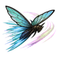
Hane Waza: Wing Control C
Fly on insect wings for an hour: much faster across the map.
| Rank | Chakra | Cooldown | Class level |
|---|---|---|---|
| C | 12 | 50 s | 3 |
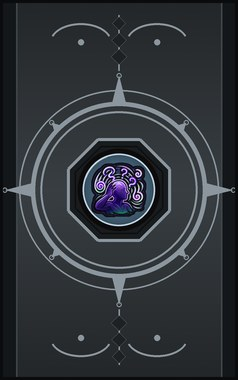
Technique trees › Clans and bloodlines
11 techniques · Clan tab
Needs the Hitobitomae gene.

Fly on insect wings for an hour: much faster across the map.
| Rank | Chakra | Cooldown | Class level |
|---|---|---|---|
| C | 12 | 50 s | 3 |
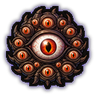
Open all thousand lenses for half an hour: nothing escapes the user's sight.
| Rank | Chakra | Cooldown | Class level |
|---|---|---|---|
| C | 12 | 50 s | 3 |
| A | 30 | 50 s | 13 |
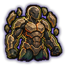
Harden the skin into an exoskeleton for half an hour. Tougher at each rank.
| Rank | Chakra | Cooldown | Class level |
|---|---|---|---|
| C | 15 | 50 s | 5 |
| B | 25 | 50 s | 9 |
| S | 50 | 50 s | 17 |
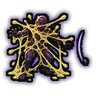
Spit glue that sticks an enemy in place for half a minute.
| Rank | Chakra | Cooldown | Class level |
|---|---|---|---|
| C | 15 | 20 s | 4 |
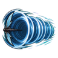
Spin the wing sword and launch a tunnel of sound.
| Rank | Chakra | Cooldown | Class level |
|---|---|---|---|
| C | 18 | 10 s | 5 |
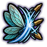
Beating wings deflect incoming projectiles. The advanced version holds longer and wider.
| Rank | Chakra | Cooldown | Class level |
|---|---|---|---|
| C | 20 | 30 s | 6 |
| B | 30 | 30 s | 10 |
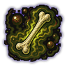
Vibrations in the air leave every enemy nearby sick and weak for a minute.
| Rank | Chakra | Cooldown | Class level |
|---|---|---|---|
| C | 20 | 33 s | 6 |
| B | 30 | 33 s | 10 |
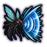
A shrieking blast of wing-sound tears through a cone.
| Rank | Chakra | Cooldown | Class level |
|---|---|---|---|
| B | 30 | 20 s | 9 |
Vibrations scramble thought: enemies in an area wander off confused.
| Rank | Chakra | Cooldown | Class level |
|---|---|---|---|
| B | 40 | 83 s | 11 |
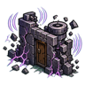
Bombard walls, doors and turrets with vibrations that shake them apart. It hits every structure in the area, your own included. Stronger at each rank.
| Rank | Chakra | Cooldown | Class level |
|---|---|---|---|
| C | 20 | 25 s | 6 |
| B | 30 | 25 s | 10 |
| A | 45 | 33 s | 14 |
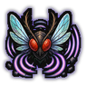
Wing-beat vibrations shake anyone close for a minute. Stronger at each rank.
| Rank | Chakra | Cooldown | Class level |
|---|---|---|---|
| B | 30 | 83 s | 11 |
| A | 45 | 83 s | 15 |
| S | 70 | 100 s | 19 |